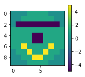

Data science II
<img src=”https://upload.wikimedia.org/wikipedia/commons/1/1a/NumPy_logo.svg” width=400>
Numpy…
- lets us create N-dimensional arrays
- lets us efficiantly work with those arrays
- integrates with or is the basis for many other usefull packages like scipy, pandas, xarray, etc.
What are arrays?
- like lists
- can have more dimensions that 1 (kind of like a list of lists when thinking about 2 dimensions)
- are easier to work with than list of lists
Create arrays
import numpy as np
import matplotlib.pyplot as plt
a = np.array([3., 6., 8., 7., 9., 4., 1., 6., 4., 4., 8.])
a
array([3., 6., 8., 7., 9., 4., 1., 6., 4., 4., 8.])
Arrays have some attributes like:
A dimension
a.ndim
1
A shape
a.shape
(11,)
and of course a data type
a.dtype
dtype('float64')
To create arrays with more dimensions we use list of lists as the first argument to np.array
smile = np.array([[0, 0, 0, 1, 1, 1, 1, 0, 0, 0],
[0, 0, 1, 1, 1, 1, 1, 1, 0, 0],
[0, 1, 1, 5, 1, 1, 5, 1, 1, 0],
[1, 1, 1, 1, 1, 1, 1, 1, 1, 1],
[1, 1, 1, 1, 1, 1, 1, 1, 1, 1],
[1, 1, 1, 1, 1, 1, 1, 1, 1, 1],
[1, 1, 5, 1, 1, 1, 1, 5, 1, 1],
[0, 1, 1, 5, 1, 1, 5, 1, 1, 0],
[0, 0, 1, 1, 5, 5, 1, 1, 0, 0],
[0, 0, 0, 1, 1, 1, 1, 0, 0, 0]])
plt.imshow(smile)
plt.show()

This arrays attributes are:
smile.ndim
2
smile.shape
(10, 10)
smile.dtype
dtype('int64')
Info
There are more attributes for example
- size: gives the total number of elements
- itemsize: gives the memory size of one element
- nbytes: gives the total memory size of the array
Notice that by default numpy creates data types of 64 bit size. To create other types you need to specify the dtype argument in the array initalisation which takes one of the many data types listed in the documentation here
You can also always cast to a different data type later on:
a = a.astype(np.int32)
a.dtype
dtype('int32')
Array shape
Other ways to create arrays
Most of the time we don’t want to create arrays with specific values by hand but need to initialize arrays of a certain shape to populate them with values later. While there are more the following two are the most used ones.
Create array with zeros:
np.zeros((5,5))
array([[0., 0., 0., 0., 0.],
[0., 0., 0., 0., 0.],
[0., 0., 0., 0., 0.],
[0., 0., 0., 0., 0.],
[0., 0., 0., 0., 0.]])
Create an array with zeros based on the shape and dtype of another array:
np.zeros_like(smile)
array([[0, 0, 0, 0, 0, 0, 0, 0, 0, 0],
[0, 0, 0, 0, 0, 0, 0, 0, 0, 0],
[0, 0, 0, 0, 0, 0, 0, 0, 0, 0],
[0, 0, 0, 0, 0, 0, 0, 0, 0, 0],
[0, 0, 0, 0, 0, 0, 0, 0, 0, 0],
[0, 0, 0, 0, 0, 0, 0, 0, 0, 0],
[0, 0, 0, 0, 0, 0, 0, 0, 0, 0],
[0, 0, 0, 0, 0, 0, 0, 0, 0, 0],
[0, 0, 0, 0, 0, 0, 0, 0, 0, 0],
[0, 0, 0, 0, 0, 0, 0, 0, 0, 0]])
Create array with ones:
np.ones((5,5), dtype=np.float32)
array([[1., 1., 1., 1., 1.],
[1., 1., 1., 1., 1.],
[1., 1., 1., 1., 1.],
[1., 1., 1., 1., 1.],
[1., 1., 1., 1., 1.]], dtype=float32)
Similarly to the zeros case there is a function np.ones_like.
Notice that additionally we can specify a dtype other than the default of np.float64.
Task
Two more conveniant functions are np.arange(start, stop, n) and np.linspace(start, stop, n).
- Try them both and find out what they are each doing
Solution
np.arange(start, stop, step) creates a sequence of numbers from start to stop with increment step
np.linspace(start, stop, n) creates a sequence of n evenly spaced numbers from start to stop.
Accessing elements (indexing)
Array elements can be accessed similar to lists with the bracket notation.
For higher dimensional arrays we need to know which index accesses a certain dimension or axis.
<img src=”https://www.oreilly.com/library/view/elegant-scipy/9781491922927/assets/elsp_0105.png” width=900>
The following accesses the left eye of the smiley which is located in row 2 and column 3 (counts start at 0).
smile[2,3]
5
This can also be used to assign new values
smile[2,3] = 0
plt.imshow(smile)
plt.show()

Slicing
Additionally to indexing slicing (again simillar to lists) is possible to select more than one lement.
The general syntax is [start:stop:step].
The following selects only the smile part of the smiley:
mouth = smile[6:, :]
plt.imshow(mouth)
plt.show()
Or we can select every other element
a[::2]
array([3, 8, 9, 1, 4, 8], dtype=int32)
Notice that we omitted the stop index while selecting rows and both start and stop index with the columns as well as the step size.
By default numpy if an index is omitted slicing
- starts at 0 (start omitted),
- reaches to the end (stop is omitted)
- and uses a step size of 1 (step omitted).
We can also combine indexing and slicing.
The following “blindfolds” our smiley:
smile[2, 1:9] = 9
plt.imshow(smile)
plt.show()

Task
- Copy the smile array init code from above so you don’t have to type it yourself
- Give the smiley a nose 2x2 elements big using the same value used for the eyes and mouth
- What happens when you select a value of -1 for the step index while slicing (Hint: try it on both axis)?
Solution
The nose:
smile[4:6, 4:6] = 5
plt.imshow(smile)
plt.show()
Reverting array:
plt.imshow(smile[::-1,:])
plt.show()
Reshaping
Sometimes data needs to be converted to another shape which can be done with the reshape method.
For example creating a 2d array from a 1d array
b = np.arange(1,10)
b
array([1, 2, 3, 4, 5, 6, 7, 8, 9])
b.reshape(3,3)
array([[1, 2, 3],
[4, 5, 6],
[7, 8, 9]])
While in the special case of converting a 1D array to a vector can also be accomplished using reshape it is easier to use the following since no knowledge of the exact shape is necessary.
a
(11,)
a[:, np.newaxis].shape
(11, 1)
Flatten vs. Ravel
The opposite direction of creating a 1d array from a higher dimensional array can be done using either
smile.flatten()
array([0, 0, 0, 1, 1, 1, 1, 0, 0, 0, 0, 0, 1, 1, 1, 1, 1, 1, 0, 0, 0, 9,
9, 9, 9, 9, 9, 9, 9, 0, 1, 1, 1, 1, 1, 1, 1, 1, 1, 1, 1, 1, 1, 1,
1, 1, 1, 1, 1, 1, 1, 1, 1, 1, 1, 1, 1, 1, 1, 1, 1, 1, 5, 1, 1, 1,
1, 5, 1, 1, 0, 1, 1, 5, 1, 1, 5, 1, 1, 0, 0, 0, 1, 1, 5, 5, 1, 1,
0, 0, 0, 0, 0, 1, 1, 1, 1, 0, 0, 0])
or
smile.ravel()
array([0, 0, 0, 1, 1, 1, 1, 0, 0, 0, 0, 0, 1, 1, 1, 1, 1, 1, 0, 0, 0, 9,
9, 9, 9, 9, 9, 9, 9, 0, 1, 1, 1, 1, 1, 1, 1, 1, 1, 1, 1, 1, 1, 1,
1, 1, 1, 1, 1, 1, 1, 1, 1, 1, 1, 1, 1, 1, 1, 1, 1, 1, 5, 1, 1, 1,
1, 5, 1, 1, 0, 1, 1, 5, 1, 1, 5, 1, 1, 0, 0, 0, 1, 1, 5, 5, 1, 1,
0, 0, 0, 0, 0, 1, 1, 1, 1, 0, 0, 0])
The difference between the two is flatten returns a copy while ravel returns a view of the array.
Views vs. copies
Remember our smiley
plt.imshow(smile)
plt.show()
Lets say we want to do some calculations on the mouth area of the array. A common workflow would be to select the corresponding part of the array first
nose = smile[4:9, 2:8]
To be able to differentiate between the nose and the mouth we assign a new value to the nose
nose[0:2,2:4] = 20
nose
array([[ 1, 1, 20, 20, 1, 1],
[ 1, 1, 20, 20, 1, 1],
[ 5, 1, 1, 1, 1, 5],
[ 1, 5, 1, 1, 5, 1],
[ 1, 1, 5, 5, 1, 1]])
Now we could calculate for example occurance of each value in the array.
Later on we want to keep working on the original array but notice
plt.imshow(smile)
plt.colorbar()
plt.show()

What happend?
Slicing returned a so called view of the array which points to the same memory and therefore if changed, changes the values in the original array too.
This is different to normal python lists where slicing returns a copy.
In order to keep a real copy of the array for later use you need to use the np.copy() method (which can also be used on slices):
backup = smile.copy()
Here, for example, you can find more information around advantages of copies and views
| View | Copy |
|---|---|
| a[1,:] | |
| np.ravel() | np.flatten() |
Boolean operations
Using boolean operators we can test an array on where a certain condition is met.
smile > 8
array([[False, False, False, False, False, False, False, False, False,
False],
[False, False, False, False, False, False, False, False, False,
False],
[False, True, True, True, True, True, True, True, True,
False],
[False, False, False, False, False, False, False, False, False,
False],
[False, False, False, False, True, True, False, False, False,
False],
[False, False, False, False, True, True, False, False, False,
False],
[False, False, False, False, False, False, False, False, False,
False],
[False, False, False, False, False, False, False, False, False,
False],
[False, False, False, False, False, False, False, False, False,
False],
[False, False, False, False, False, False, False, False, False,
False]])
We can also use this array as a mask to select the corresponding elements from the array
smile[smile > 8]
array([ 9, 9, 9, 9, 9, 9, 9, 9, 20, 20, 20, 20])
or assign new values to those locations
smile[smile > 8] = -5
plt.imshow(smile)
plt.colorbar()
plt.show()

Missing values
In arrays with data type float missing values are assigned np.nan
missing = np.arange(1.,5.)
missing[1:3] = np.nan
missing
array([ 1., nan, nan, 4.])
To handle these we can use boolean masks together with the np.isnan method
missing[np.isnan(missing)]
array([nan, nan])
Selecting all value which are not nan is also possible
missing[~np.isnan(missing)]
array([1., 4.])
Aggregating
Numpy has many built in functions to calculate basic statistics for example the min (max), mean or standard deviation
np.max(smile)
5
These functions can be used together with the axis argument to calculate these statistics for any given axis
np.mean(smile, axis=1)
array([ 0.4, 0.6, 1.6, 1. , -0.8, -0.8, 1.8, 1.6, 1.4, 0.4])
np.std(smile, axis=1)
array([0.48989795, 0.48989795, 1.74355958, 0. , 2.74954542,
2.74954542, 1.6 , 1.74355958, 1.8547237 , 0.48989795])
These functions are very fast and should not be confused with other python built in function which might do the same, for example sum.
big_array = np.random.rand(1000000)
%timeit sum(big_array)
%timeit np.sum(big_array)
81.9 ms ± 1.76 ms per loop (mean ± std. dev. of 7 runs, 10 loops each)
501 µs ± 14.9 µs per loop (mean ± std. dev. of 7 runs, 1000 loops each)
Task
- Assign the following array to a new variable:
np.array([[1., np.nan, 7., 30., -4.], [-7., 18., 11., np.nan, 3.]]) - Select all but the last column and assign it to a new variable, keeping the old array as backup
- Assign a new value to all nan’s in the selection created in task 2
- Try to calculate the median for the original array over the rows
- Go to the numpy documentation here and find a function which gets around the problem you encountered in task 4
Solution
a = np.array([[1., np.nan, 7., 30., -4.], [-7., 18., 11., np.nan, 3.]])
Remove the last column and make a copy to new variable b
b = a[:,:-1].copy()
Assign all np.nans the value -99
b[np.isnan(b)] = -99
The standard median function included np.nan values when calculating
np.median(a, axis=1)
To ignore np.nan values most aggregation functions have an equivalent which is prepended with “nan”
np.nanmedian(a, axis=1)
Ufuncs
Next to functions to aggregate the values in an array there are functions which operate on arrays in an element-by-element fashion. These “vectorized” functions are called universal functions (ufuncs).
All basic arithmetic operations like
- addition,
- subtraction,
- multiplication,
- division as well as
- exponentiation and
- modulus
- (and more)
are implemented. These can be used with the usual operators we already know.
a = np.arange(1, 10).reshape(3,3)
a
array([[1, 2, 3],
[4, 5, 6],
[7, 8, 9]])
a = 0.3 * a**2 + 4
a
array([[ 4.3, 5.2, 6.7],
[ 8.8, 11.5, 14.8],
[18.7, 23.2, 28.3]])
These can not only be used with scalars but also with arrays
b = np.arange(1, 10).reshape(3,3)
a / b
array([[4.3 , 2.6 , 2.23333333],
[2.2 , 2.3 , 2.46666667],
[2.67142857, 2.9 , 3.14444444]])
These common operators are wrappers for the corresponding numpy functions. For example + wraps np.sum().
The above functions all operated on two arguments. Functions like np.abs() which returns the absolute value take only one argument. There are many functions like this implemented in numpy for example the sine function
a = np.arange(1, 25, 0.1)
res = np.sin(a)
plt.plot(a, res)
plt.show()

Info
- Have a look at the scipy.special library if you need a very special function.
- Many of the ufuncs have a special
outparameter to which you can supply an output array (even slices work). Using it especially for very large arrays unecessary copies can be avoided saving memory.
Broadcasting
Above we saw that operations on same shape arrays operated element wise
a = np.arange(1, 10).reshape(3,3)
b = np.arange(1, 10).reshape(3,3)
a + b
array([[ 2, 4, 6],
[ 8, 10, 12],
[14, 16, 18]])
Iterestingly, even though, the arguments are not of the same shape, the following also worked
a + 5
array([[ 6, 7, 8],
[ 9, 10, 11],
[12, 13, 14]])
Even more interesting is the following
c = np.arange(1,4)
c
array([1, 2, 3])
a + c
array([[ 2, 4, 6],
[ 5, 7, 9],
[ 8, 10, 12]])
This behaviour is called broadcasting and is a very powerfull feature. You can thinkg of it as numpy automatically duplicating the values to the correct size. The advantage is that no actuall copying memory wise is done.
The following picture makes this a little clearer.
<img src=”https://scipy-lectures.org/_images/numpy_broadcasting.png” width=700>
Source: https://scipy-lectures.org/_images/numpy_broadcasting.png
Broadcasting rules
- If the number of dimensions differ, the one with fewer dimensions is padded with ones on its left side.
- If the shape does not match in any dimension, the array with shape equal to 1 in that dimension is stretched to match the other shape.
- If in any dimension the sizes disagree and neither is equal to 1, an error is raised.
Fancy indexing
Up to now we used single indices to select elements or slices to select continous (parts) of columns and/or rows.
Fancy indexing allows us to select multiple elements with different indices in a noncontinous fashion by passing a list or array of indices.
a = np.arange(1, 13)
a
array([ 1, 2, 3, 4, 5, 6, 7, 8, 9, 10, 11, 12])
ind = [2, 5, 7]
a[ind]
array([3, 6, 8])
The shape of the result depends on the shape of the index array
ind = np.array([[2, 5],
[7, 9]])
ind
array([[2, 5],
[7, 9]])
a[ind]
array([[ 3, 6],
[ 8, 10]])
This also works for higher dimensional arrays
a = a.reshape(3,4)
a
array([[ 1, 2, 3, 4],
[ 5, 6, 7, 8],
[ 9, 10, 11, 12]])
cind = np.array([0, 3])
rind = np.array([0, 2])
a[rind, cind]
array([ 1, 12])
How the indices are combined is determined by the same rules as for broadcasting.
Fancy indexing can also be combined normal indexing and slicing
print("Array:\n", a)
print("Column indices:\n ", cind)
a[1, cind]
Array:
[[ 1 2 3 4]
[ 5 6 7 8]
[ 9 10 11 12]]
Column indices:
[0 3]
array([5, 8])
print("Row indices:\n", rind)
a[rind, :]
Row indices:
[0 2]
array([[ 1, 2, 3, 4],
[ 9, 10, 11, 12]])

xarray
- combines and extends the core strength of numpy and pandas
- enables use of dimension names instead of axis labels for selection and operations
- enables writing of less and more readable code
Datastructures
DataArrayis like apandas.Seriesbut for N dimensionsDatasetis a container of any number ofDataArrays which share dimensions and compares to apandas.DataFramebut for N dimensions
DataArray
import pandas as pd
import xarray as xr
data = np.random.rand(4, 3)
locs = ["Marburg", "Giessen", "Frankfurt"]
times = pd.date_range("2018-12-01", periods=4, freq="M")
city_temp = xr.DataArray(data, coords=[times, locs], dims=["time", "cities"])
city_temp
<xarray.DataArray (time: 4, cities: 3)>
array([[0.820618, 0.83036 , 0.926957],
[0.15065 , 0.483171, 0.86758 ],
[0.228138, 0.159374, 0.071591],
[0.29914 , 0.083829, 0.521104]])
Coordinates:
* time (time) datetime64[ns] 2018-12-31 2019-01-31 2019-02-28 2019-03-31
* cities (cities) <U9 'Marburg' 'Giessen' 'Frankfurt'
Attributes
Attributes can be used for informational purposes. Xarray does not interpret them in any way and they are only propagated in calculations when it is unambigous.
city_temp.name = "city_temperatures"
city_temp.attrs["Description"] = "Monthly temperature values for the cities of Marburg, Giessen and Frankfurt."
city_temp.attrs["units"] = "Degrees Celsius"
city_temp
<xarray.DataArray 'city_temperatures' (time: 4, cities: 3)>
array([[0.820618, 0.83036 , 0.926957],
[0.15065 , 0.483171, 0.86758 ],
[0.228138, 0.159374, 0.071591],
[0.29914 , 0.083829, 0.521104]])
Coordinates:
* time (time) datetime64[ns] 2018-12-31 2019-01-31 2019-02-28 2019-03-31
* cities (cities) <U9 'Marburg' 'Giessen' 'Frankfurt'
Attributes:
Description: Monthly temperature values for the cities of Marburg, Giess...
units: Degrees Celsius
Dataset
A xr.Dataset can be created by supplying dictionaries for the parameters data_vars, coords and attrs. It is always good to provide some descriptive attributes even though the parameter attrs is optional.
The data_vars dictionary keys are the names of the variables while the values are either:
DataArrays- pandas objects, which will be converted to
DataArrays - a tuple of the form (dim, data) where dim is a list of dimension names and data a
np.array(see documentation for more details)
data = np.random.rand(6, 3)
times = pd.date_range("2019-06-01", periods=6, freq="M")
precip_attrs = {"Description": "Precipitation for the cities of Marburg, Giessen and Frankfurt",
"units": "mm"}
city_precip = xr.DataArray(data, coords=[times, locs], dims=["time", "cities"], attrs=precip_attrs, name="city_precipitation")
When we create a Dataset from DataArrays we can also omit the coords parameter as long as all of them share the same dimensions.
city_ds = xr.Dataset({"Temperature": city_temp, "Precipitation": city_precip})
city_ds
<xarray.Dataset>
Dimensions: (cities: 3, time: 10)
Coordinates:
* time (time) datetime64[ns] 2018-12-31 2019-01-31 ... 2019-11-30
* cities (cities) <U9 'Marburg' 'Giessen' 'Frankfurt'
Data variables:
Temperature (time, cities) float64 0.8206 0.8304 0.927 ... nan nan nan
Precipitation (time, cities) float64 nan nan nan ... 0.4795 0.8928 0.7285
Datasets can also have descriptive attributes
city_ds.attrs["Description"] = "Measurements of Temperature and Precipitation"
city_ds
<xarray.Dataset>
Dimensions: (cities: 3, time: 10)
Coordinates:
* time (time) datetime64[ns] 2018-12-31 2019-01-31 ... 2019-11-30
* cities (cities) <U9 'Marburg' 'Giessen' 'Frankfurt'
Data variables:
Temperature (time, cities) float64 0.8206 0.8304 0.927 ... nan nan nan
Precipitation (time, cities) float64 nan nan nan ... 0.4795 0.8928 0.7285
Attributes:
Description: Measurements of Temperature and Precipitation
When we access one of the variables we see that they can have separate attributes describing only this specific variable.
city_ds["Temperature"]
<xarray.DataArray 'Temperature' (time: 10, cities: 3)>
array([[0.820618, 0.83036 , 0.926957],
[0.15065 , 0.483171, 0.86758 ],
[0.228138, 0.159374, 0.071591],
[0.29914 , 0.083829, 0.521104],
[ nan, nan, nan],
[ nan, nan, nan],
[ nan, nan, nan],
[ nan, nan, nan],
[ nan, nan, nan],
[ nan, nan, nan]])
Coordinates:
* time (time) datetime64[ns] 2018-12-31 2019-01-31 ... 2019-11-30
* cities (cities) <U9 'Marburg' 'Giessen' 'Frankfurt'
Attributes:
Description: Monthly temperature values for the cities of Marburg, Giess...
units: Degrees Celsius
Xarray has some conveniant functions to create DataArrays and Datasets from pandas series or dataframes respectively.
import pandas as pd
garmisch = pd.read_csv("../data/produkt_klima_tag_20171010_20190412_01550.txt", parse_dates=["MESS_DATUM"], sep=";")
zugspitze = pd.read_csv("../data/produkt_klima_tag_20171010_20190412_05792.txt", parse_dates=["MESS_DATUM"], sep=";")
klima_tag = pd.concat([garmisch, zugspitze])
klima_tag = klima_tag.set_index(["STATIONS_ID", "MESS_DATUM"])
klima_tag.head()
klima_tag[" TMK"].values
array([ 9.3, 9.2, 10.6, ..., -4.9, -7.5, -8. ])
After setting the index the conversion of any of the columns (series) of the pandas dataframe to a xr.DataArray is easy
kt_da = xr.DataArray.from_series(klima_tag[" TMK"])
kt_da
<xarray.DataArray ' TMK' (STATIONS_ID: 2, MESS_DATUM: 550)>
array([[ 9.3, 9.2, 10.6, ..., 7.6, 5.7, 4.4],
[-4.5, -1.3, -1.2, ..., -4.9, -7.5, -8. ]])
Coordinates:
* STATIONS_ID (STATIONS_ID) int64 1550 5792
* MESS_DATUM (MESS_DATUM) datetime64[ns] 2017-10-10 ... 2019-04-12
If we want to use all variables (columns) in the dataframe we can directly convert it to a xr.Dataset without the detour of converting every column to a xr.DataArray like above.
kt_ds = xr.Dataset.from_dataframe(klima_tag)
kt_ds
<xarray.Dataset>
Dimensions: (MESS_DATUM: 550, STATIONS_ID: 2)
Coordinates:
* STATIONS_ID (STATIONS_ID) int64 1550 5792
* MESS_DATUM (MESS_DATUM) datetime64[ns] 2017-10-10 ... 2019-04-12
Data variables:
QN_3 (STATIONS_ID, MESS_DATUM) int64 10 10 10 10 10 10 ... 1 1 1 1 1
FX (STATIONS_ID, MESS_DATUM) float64 5.6 -999.0 -999.0 ... 8.7 9.6
FM (STATIONS_ID, MESS_DATUM) float64 1.0 -999.0 -999.0 ... 3.1 2.5
QN_4 (STATIONS_ID, MESS_DATUM) int64 3 3 3 3 3 3 3 ... 1 1 1 1 1 1 1
RSK (STATIONS_ID, MESS_DATUM) float64 0.0 0.0 0.0 ... 10.1 1.6 0.0
RSKF (STATIONS_ID, MESS_DATUM) int64 6 0 0 0 0 0 0 ... 0 7 7 7 7 7 7
SDK (STATIONS_ID, MESS_DATUM) float64 2.3 9.533 9.483 ... 0.0 8.833
SHK_TAG (STATIONS_ID, MESS_DATUM) int64 0 0 0 0 0 ... 430 435 430 430
NM (STATIONS_ID, MESS_DATUM) float64 7.5 2.6 1.9 ... 7.9 8.0 6.3
VPM (STATIONS_ID, MESS_DATUM) float64 9.4 9.1 9.0 ... 3.9 3.2 2.1
PM (STATIONS_ID, MESS_DATUM) float64 937.4 938.4 ... 702.5 702.9
TMK (STATIONS_ID, MESS_DATUM) float64 9.3 9.2 10.6 ... -7.5 -8.0
UPM (STATIONS_ID, MESS_DATUM) float64 82.5 81.04 ... 91.46 66.38
TXK (STATIONS_ID, MESS_DATUM) float64 15.7 18.5 22.2 ... -6.0 -2.7
TNK (STATIONS_ID, MESS_DATUM) float64 4.6 2.9 3.1 ... -10.7 -11.8
TGK (STATIONS_ID, MESS_DATUM) float64 3.0 1.4 1.1 ... -999.0 -999.0
eor (STATIONS_ID, MESS_DATUM) object 'eor' 'eor' ... 'eor' 'eor'
Properties of Datasets and DataArrays
Any of the properties can be accessed seperately and values and attrs can be modified in place
For DataArray
- values
- coords
- dims
- attrs
- name
For Dataset
- data_vars
- coords
- attrs
kt_da.values
array([[ 9.3, 9.2, 10.6, ..., 7.6, 5.7, 4.4],
[-4.5, -1.3, -1.2, ..., -4.9, -7.5, -8. ]])
Task
- You should already have the two csv’s used above on your computer. If not download them again.
- Read them and create a Dataset from them like shown above.
- Look at the properties. Give them some descriptive attributes.
Indexing and selecting data
Data selection in xarray is very flexible.
For DataArrays you can select by positional index like numpy:
city_temp[:, 2]
<xarray.DataArray 'city_temperatures' (time: 4)>
array([0.926957, 0.86758 , 0.071591, 0.521104])
Coordinates:
* time (time) datetime64[ns] 2018-12-31 2019-01-31 2019-02-28 2019-03-31
cities <U9 'Frankfurt'
Attributes:
Description: Monthly temperature values for the cities of Marburg, Giess...
units: Degrees Celsius
by position with label like in pandas:
city_temp.loc[:, "Marburg"]
<xarray.DataArray 'city_temperatures' (time: 4)>
array([0.820618, 0.15065 , 0.228138, 0.29914 ])
Coordinates:
* time (time) datetime64[ns] 2018-12-31 2019-01-31 2019-02-28 2019-03-31
cities <U9 'Marburg'
Attributes:
Description: Monthly temperature values for the cities of Marburg, Giess...
units: Degrees Celsius
by dimension name with index:
city_temp.isel(cities=1)
<xarray.DataArray 'city_temperatures' (time: 4)>
array([0.83036 , 0.483171, 0.159374, 0.083829])
Coordinates:
* time (time) datetime64[ns] 2018-12-31 2019-01-31 2019-02-28 2019-03-31
cities <U9 'Giessen'
Attributes:
Description: Monthly temperature values for the cities of Marburg, Giess...
units: Degrees Celsius
or dimension name with label:
city_temp.sel(cities="Marburg")
<xarray.DataArray 'city_temperatures' (time: 4)>
array([0.820618, 0.15065 , 0.228138, 0.29914 ])
Coordinates:
* time (time) datetime64[ns] 2018-12-31 2019-01-31 2019-02-28 2019-03-31
cities <U9 'Marburg'
Attributes:
Description: Monthly temperature values for the cities of Marburg, Giess...
units: Degrees Celsius
The last two selection methods work for Datasets too.
city_ds.sel(cities="Marburg")
<xarray.Dataset>
Dimensions: (time: 10)
Coordinates:
* time (time) datetime64[ns] 2018-12-31 2019-01-31 ... 2019-11-30
cities <U9 'Marburg'
Data variables:
Temperature (time) float64 0.8206 0.1507 0.2281 0.2991 ... nan nan nan
Precipitation (time) float64 nan nan nan nan ... 0.2114 0.2962 0.808 0.4795
Attributes:
Description: Measurements of Temperature and Precipitation
The sel selection methods accept an additional parameter method which you can use to do inexact nearest-neighbour lookups.
city_ds["time"]
<xarray.DataArray 'time' (time: 10)>
array(['2018-12-31T00:00:00.000000000', '2019-01-31T00:00:00.000000000',
'2019-02-28T00:00:00.000000000', '2019-03-31T00:00:00.000000000',
'2019-06-30T00:00:00.000000000', '2019-07-31T00:00:00.000000000',
'2019-08-31T00:00:00.000000000', '2019-09-30T00:00:00.000000000',
'2019-10-31T00:00:00.000000000', '2019-11-30T00:00:00.000000000'],
dtype='datetime64[ns]')
Coordinates:
* time (time) datetime64[ns] 2018-12-31 2019-01-31 ... 2019-11-30
city_ds.sel(time="2019-05-15", method="nearest")
<xarray.Dataset>
Dimensions: (cities: 3)
Coordinates:
time datetime64[ns] 2019-03-31
* cities (cities) <U9 'Marburg' 'Giessen' 'Frankfurt'
Data variables:
Temperature (cities) float64 0.2991 0.08383 0.5211
Precipitation (cities) float64 nan nan nan
Attributes:
Description: Measurements of Temperature and Precipitation
In addition to these basic selection methods there are more advanced methods available for example masking or vectorized indexing with DataArrays which you can read about in the documentation
Task
- Select the daily maximum Temperature (TNX) and daily minimum temperature (TNK) from the dataset.
- Select only one month of data.
Computations
All numpy ufuncs are supported for calculations on DataArrays.
city_temp * 5
<xarray.DataArray 'city_temperatures' (time: 4, cities: 3)>
array([[4.103089, 4.151798, 4.634783],
[0.753252, 2.415853, 4.337899],
[1.140689, 0.796868, 0.357957],
[1.495699, 0.419143, 2.605518]])
Coordinates:
* time (time) datetime64[ns] 2018-12-31 2019-01-31 2019-02-28 2019-03-31
* cities (cities) <U9 'Marburg' 'Giessen' 'Frankfurt'
np.exp(city_precip)
<xarray.DataArray 'city_precipitation' (time: 6, cities: 3)>
array([[2.243584, 1.550343, 1.241306],
[1.857082, 2.043417, 2.123389],
[1.235452, 1.628662, 1.124934],
[1.344738, 2.175229, 1.45625 ],
[2.243358, 1.820405, 1.373336],
[1.615321, 2.441847, 2.072027]])
Coordinates:
* time (time) datetime64[ns] 2019-06-30 2019-07-31 ... 2019-11-30
* cities (cities) <U9 'Marburg' 'Giessen' 'Frankfurt'
Arithmetic operations on Datasets automatically loop over all variables
city_ds > 0.5
<xarray.Dataset>
Dimensions: (cities: 3, time: 10)
Coordinates:
* cities (cities) <U9 'Marburg' 'Giessen' 'Frankfurt'
* time (time) datetime64[ns] 2018-12-31 2019-01-31 ... 2019-11-30
Data variables:
Temperature (time, cities) bool True True True ... False False False
Precipitation (time, cities) bool False False False ... False True True
Attributes:
Description: Measurements of Temperature and Precipitation
Similar to numpy you can do aggregations but instead of supplying an index for axis you can use dimension names directly.
city_ds.mean("time")
<xarray.Dataset>
Dimensions: (cities: 3)
Coordinates:
* cities (cities) <U9 'Marburg' 'Giessen' 'Frankfurt'
Data variables:
Temperature (cities) float64 0.3746 0.3892 0.5968
Precipitation (cities) float64 0.537 0.6516 0.4181
Timeseries
As seen above xarray supports indexing with datetimes. Moreover similar to pandas using the .dt datetime accessor datetime components can easily be accessed.
city_ds.time.dt.month
<xarray.DataArray 'month' (time: 10)>
array([12, 1, 2, 3, 6, 7, 8, 9, 10, 11])
Coordinates:
* time (time) datetime64[ns] 2018-12-31 2019-01-31 ... 2019-11-30
Additionally these datetime components can also be used as “virtual coordinates” (again similar to pandas with the addition that xarray also implements “seasons”).
city_ds["time.month"]
<xarray.DataArray 'month' (time: 10)>
array([12, 1, 2, 3, 6, 7, 8, 9, 10, 11])
Coordinates:
* time (time) datetime64[ns] 2018-12-31 2019-01-31 ... 2019-11-30
city_ds["time.season"]
<xarray.DataArray 'season' (time: 10)>
array(['DJF', 'DJF', 'DJF', 'MAM', 'JJA', 'JJA', 'JJA', 'SON', 'SON', 'SON'],
dtype='<U3')
Coordinates:
* time (time) datetime64[ns] 2018-12-31 2019-01-31 ... 2019-11-30
GroupBy
Aggregation in combination with “group by” operations similar to pandas make it easy to do complex analysis. If combined with the above datetime functionality we can do aggregations like the following:
city_ds.groupby("time.season").mean("time")
<xarray.Dataset>
Dimensions: (cities: 3, season: 4)
Coordinates:
* cities (cities) <U9 'Marburg' 'Giessen' 'Frankfurt'
* season (season) object 'DJF' 'JJA' 'MAM' 'SON'
Data variables:
Temperature (season, cities) float64 0.3998 0.491 0.622 ... nan nan nan
Precipitation (season, cities) float64 nan nan nan ... 0.5279 0.7563 0.4739
Task
- Calculate seasonal means for the variables selected in task 2.
- Go to the xarray documentation and find out about the plotting functionality. Make a quick plot of the seasonal means.
Conversion to dataframe
In addition to the conversion from xarray also implements function to convert Datasets back to pandas dataframes:
city_ds.to_dataframe().head()
| Temperature | Precipitation | ||
|---|---|---|---|
| cities | time | ||
| Marburg | 2018-12-31 | 0.820618 | NaN |
| 2019-01-31 | 0.150650 | NaN | |
| 2019-02-28 | 0.228138 | NaN | |
| 2019-03-31 | 0.299140 | NaN | |
| 2019-06-30 | NaN | 0.808075 |
Writing data to/reading data from disk
xarray supports writing to many different formats for example netcdf.
city_ds.to_netcdf("output/city_measurements.nc")
Compatible files can be read from disk. Notice that xarray properly encoded the time dimension during writing and decodes them automatically again when reading.
new_ds = xr.open_dataset("output/city_measurements.nc")
new_ds
<xarray.Dataset>
Dimensions: (cities: 3, time: 10)
Coordinates:
* time (time) datetime64[ns] 2018-12-01 2018-12-02 ... 2019-06-06
* cities (cities) object 'Marburg' 'Giessen' 'Frankfurt'
Data variables:
Temperature (time, cities) float64 ...
Precipitation (time, cities) float64 ...
Reading multiple files
If you have multiple large files, for example one for every month, like below
%%bash
ls output/multiple
city_measurements_201812.nc
city_measurements_201901.nc
city_measurements_201902.nc
city_measurements_201903.nc
city_measurements_201906.nc
city_measurements_201907.nc
city_measurements_201908.nc
city_measurements_201909.nc
city_measurements_201910.nc
city_measurements_201911.nc
There is no need to write loops for reading and concatenating the files. xarray encourages the use of the inbuilt function open_mfdataset.
t = xr.open_mfdataset("output/multiple/*.nc", concat_dim="time")
t
<xarray.Dataset>
Dimensions: (cities: 3, time: 10)
Coordinates:
* cities (cities) object 'Marburg' 'Giessen' 'Frankfurt'
* time (time) datetime64[ns] 2018-12-31 2019-01-31 ... 2019-11-30
Data variables:
Temperature (time, cities) float64 dask.array<shape=(10, 3), chunksize=(1, 3)>
Precipitation (time, cities) float64 dask.array<shape=(10, 3), chunksize=(1, 3)>
Attributes:
Description: Measurements of Temperature and Precipitation
Dask
On the last slide the print out of the dataset looked different from the output when we open a single dataset.
new_ds
<xarray.Dataset>
Dimensions: (cities: 3, time: 10)
Coordinates:
* time (time) datetime64[ns] 2018-12-01 2018-12-02 ... 2019-06-06
* cities (cities) object 'Marburg' 'Giessen' 'Frankfurt'
Data variables:
Temperature (time, cities) float64 ...
Precipitation (time, cities) float64 ...
t
<xarray.Dataset>
Dimensions: (cities: 3, time: 10)
Coordinates:
* cities (cities) object 'Marburg' 'Giessen' 'Frankfurt'
* time (time) datetime64[ns] 2018-12-31 2019-01-31 ... 2019-11-30
Data variables:
Temperature (time, cities) float64 dask.array<shape=(10, 3), chunksize=(1, 3)>
Precipitation (time, cities) float64 dask.array<shape=(10, 3), chunksize=(1, 3)>
Attributes:
Description: Measurements of Temperature and Precipitation
The reason is that the function to load multiple datasets uses Dask in the background.
Therefore instead of a normal array you get a Dask array. As they say on the website “Dask provides advanced parallelism for analytics…”. Meaning by xarray being able to use dask in the background you can easily achieve parallelism and analyze datasets which are to big for memory.
Dask uses chunks for that. Each chunk in this case being a separate array which only gets loaded (lazy loading) when it is needed by a computation (lazy evaluation) or requested by the user.
t
<xarray.Dataset>
Dimensions: (cities: 3, time: 10)
Coordinates:
* cities (cities) object 'Marburg' 'Giessen' 'Frankfurt'
* time (time) datetime64[ns] 2018-12-31 2019-01-31 ... 2019-11-30
Data variables:
Temperature (time, cities) float64 dask.array<shape=(10, 3), chunksize=(1, 3)>
Precipitation (time, cities) float64 dask.array<shape=(10, 3), chunksize=(1, 3)>
Attributes:
Description: Measurements of Temperature and Precipitation
Unfortunately we don’t have time to cover Dask functionallity but for the basic things we don’t need to know much about how Dask works since xarray can use it in the background without us noticing.
Performance example
Without Dask
rs = np.random.RandomState(0)
array1 = xr.DataArray(rs.randn(1000, 100000), dims=["place", "time"])
%time _ = array1.sum("time")
CPU times: user 250 ms, sys: 266 ms, total: 517 ms
Wall time: 523 ms
chunked1 = array1.chunk({"place": 10})
print(chunked1)
%time _ = chunked1.sum("time").compute()
<xarray.DataArray (place: 1000, time: 100000)>
dask.array<shape=(1000, 100000), dtype=float64, chunksize=(10, 100000)>
Dimensions without coordinates: place, time
CPU times: user 727 ms, sys: 0 ns, total: 727 ms
Wall time: 255 ms
Exercise 5
- Complete the fifth assignment and push your results until tuesday 14:00 next week
- Assignment link: https://classroom.github.com/a/OjslpEAv